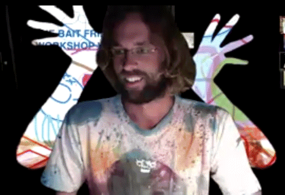
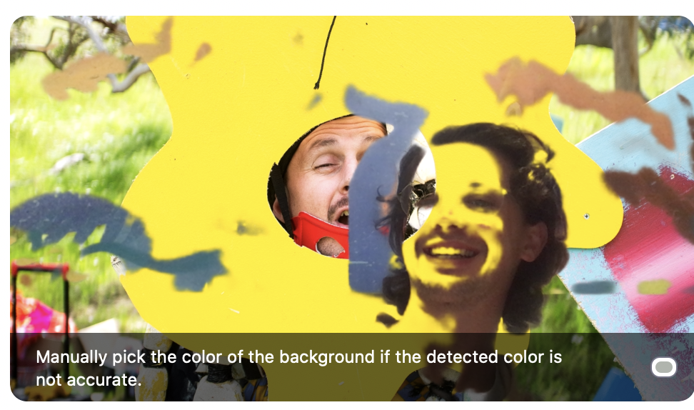
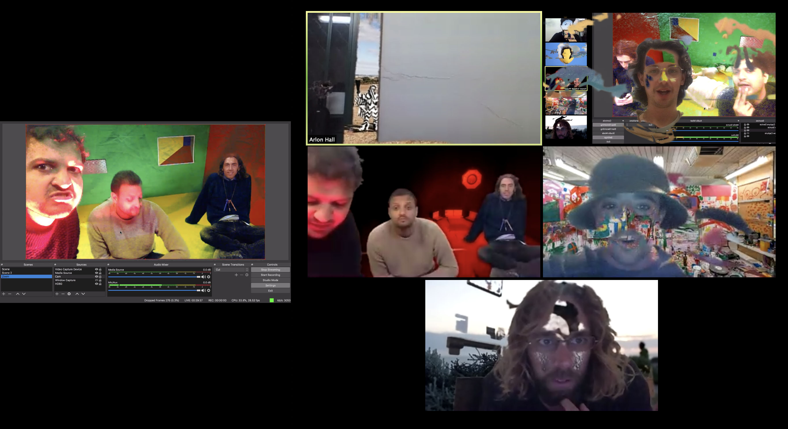
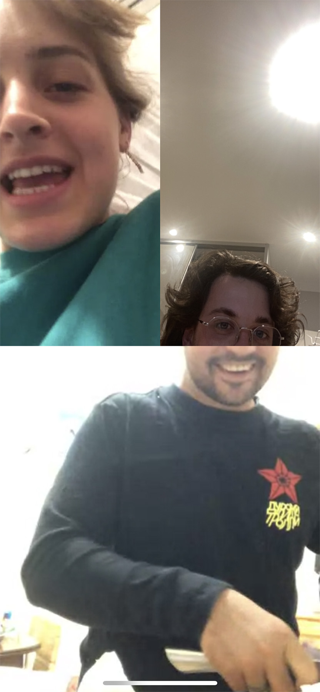

Art Basics is The Bait Fridge's digital artist residency at The Mill. Part of The Mill's 2020 programming. This online publication will showcase some of the process, experimentation and outcomes of The Bait Fridge's residency.
The Bait Fridge is a multi-disciplinary collective from South Australia. They work together to create works and performances which combine their practices under one banner. They make art, music, dance, theatre, photography, and more.
Art Basics is presented by The Mill Adelaide and City of Adelaide.
The Mill is a multi-arts, not for profit organisation where artists of all disciplines come to elevate and amplify their practice.
Our organisation is rich with stories. We witness and celebrate every part of the artistic process, facilitating insight and multiple levels of criticality. It’s a place to feel connected, inspired and motivated to create great work.
The Mill is recognised as a hub of creative innovation and cross-artform practice, making great contributions to the national contemporary arts sector, and positively impacting South Australia’s cultural landscape.
Our rich, year-round program provides artists with the necessary physical space to work on their practice, alongside diverse public events, performances and exhibitions, and professional development opportunities.
The Mill’s masterclasses, workshops and residencies place local artists, both emerging and established, with leading practitioners from across the country, and around the world.
Since 2013, The Mill has provided artists with short and long-term support, always advocating for artistic careers and responding to the aspirations of our community.
About the program
The Bait Fridge are our incoming Artists in Residence in The Mill's Exhibition Space in 2020. Due to the current COVID-19 crisis, this residency is developing new ways of creating digital content so that the residency can be available online. The Bait Fridge collective will be in residence from March 17 to May 29. With a focus on artistic process, this two-month residency allows audiences direct access to creative research and making. This residency is presented in partnership with City of Adelaide.
The Bait Fridge is a multi-disciplinary collective from South Australia whose members collaborate under a unified banner to create works and performances which combine the practices of music, art, dance, costume and theatre. Through this project The Bait Fridge will be developing ideas, costumes, performances, sculpture and music. Working with materials that other people might consider to be trash allows the collective to see beyond traditional boundaries of artists practice. Each of the members of the collective brings their own unique energy, while working collaboratively, with each other as well as audiences, allowing The Bait Fridge to explore new ways of creating and bringing new understandings to concepts of ‘art’ and the role of the ‘artist’.
The Mill invites you to witness The Bait Fridge’s creative practice digitally and gain insight into their collaborative process as the residency unfolds across a 10 week period.
Although we are currently practicing social distancing, in light of COVID-19, we will be presenting digital content for you to enjoy from the comfort of your homes. Please keep an eye on our social media for updates.
The Bait Fridge Critique
Exploring notions of collaboration, improvisation and authorship, The Bait Fridge’s residency at The Mill, titled Art Basics , offers an opportunity to glance in at the processes and mechanisms that spur this collective’s output - albeit in a highly recontextualised format - and delves into ideas surrounding adaptation and the importance of process. Usually found in a large group on the hillside of a rural music festival, or involved with a community arts program, the multidisciplinary collective were thrust along with the rest of the world into a period of unprecedented restructuring with the onset of Covid-19, resulting in a residency which explored methods of online collaboration, live streamed performances and an increased significance of digital mediums.
The Bait Fridge boasts that constant shifts in circumstance are our fuel, new spaces, new materials, new members, new mediums. However, whilst we were swept up in the Zoom revolution our training shifted to working from home jams and solo cubby-house building, working with the people we live with and the spaces we sleep in. The gallery, the theatre, The Mill - a distant memory! Hidden in our individual satellite Bait Fridges, our edges began to freeze. Internet data capped, cabin fever itching - 70 days of energy compresses. And on the last day, the pillows have finally become an extension of the head, the dirty laundry is stuck to our body, making music as it drags along the gravel in the driveway and the wheelie bin rumbles like an irritated wombat. The microwave becomes the laptop screen - our reflections reversed. We call to one another via all platforms and in live stream and yet we receive no reply. The energy must be released. A performance is required.


For the final event of the residency, The Bait Fridge used The Mill and its various spaces to livestream a performance via digital platforms with the help of Sunnyside Uploads. It was a unique combination between their usual collaborative process and their new contextually determined explorations into digital mediums. A live 4-piece band playing improvised music; 6 performers creating spontaneous productions, artworks and costumes; and a wealth of ‘tech’, from greenscreens to three-dimensional scanning, to exhibit the event online and experiment in digital formats. It was the first time they had physically collaborated since before restrictions, and the only time they were able to use The Mill’s facilities; something apparent in both the excitement and high energy of the event, yet also in an underlying sense of what could have been had they been able to use the space for the past 8 weeks. What this event required was a new, but not unwelcome, level of adaptation and a happy marriage between the ways of creating they were used to, and those that were newly learnt.


The Final Event: How to Compress 10 weeks of residency into one day.
Let us pause for a moment before we start to define what it is to be ‘in residence’ as an artist. Artist residencies as we now know them came into being towards the end of the 19th century, when wealthy patrons in Europe began extended living quarters to artists as a form of romantic patronage, most often to create their portrait in oils.
How are a collective to make a portrait of their patrons without having spent time in the provided quarters? How could we adapt a 10 week digital residency to a 1 day physical performance? We need to marry the ways we used to create, with the ways we now create - and possibly find the way in which we will create in the future. Collaboration is at our core and evokes evolution. Evolution is a process of adaptation.
Fortunately, adaptation is something which the group is used to - and even thrives on - as it posits a situation in which intuitive thinking and improvisational methods are awarded, and where outcomes are determined by the contexts and processes available. The Bait Fridge’s approach of process driven art and collaboration between various disciplines allows for a high level of flexibility in its creations, in which outcomes are determined by the processes and contexts in which something is created.
And while the question must be asked of what would have been had the collective been able to carry out the residency without restrictions, the situation allowed them to explore the structures and methods in which they create. It required them to apply process to context, or more specifically, to create the conditions in which process can be applied to contexts. How can a group of 12 artists, musicians and actors cater their performance to The Mill and to a virtual audience? This was the primary question asked during the event, and throughout the residency, and made apparent in the works created during this time. Works which portray the familiar vibrancy of The Bait Fridge’s canon, yet expressed via mediums and methods determined by the circumstance they were in.